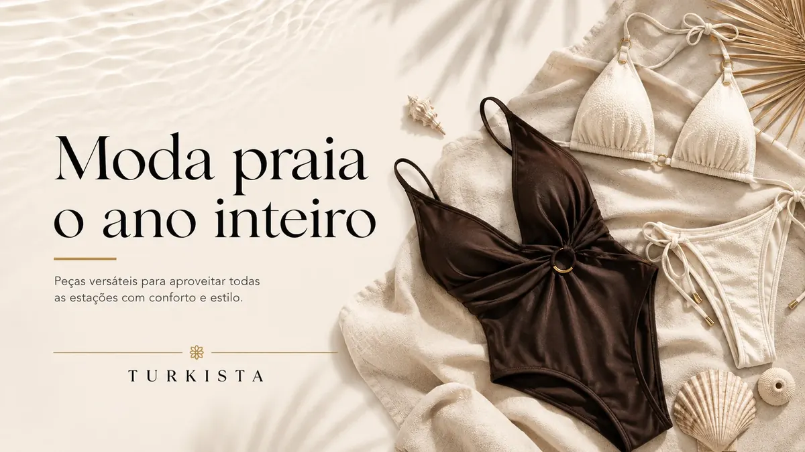

Maiô feminino moderno: como escolher um modelo para praia e piscina
Veja como comparar modelagens, cores, estampas e detalhes para escolher um maiô feminino para diferentes momentos de lazer.

Para escolher um maiô feminino moderno, considere o caimento, a cobertura, os recortes, as alças e a ocasião em que pretende usá-lo. Um modelo pode chamar atenção pela cor ou pela estampa, mas é importante conferir também como veste, quais detalhes de construção possui e quais cuidados exige.
A variedade de estilos permite encontrar desde maiôs de linhas simples até opções com estampas marcantes e recortes diferenciados. A escolha não precisa seguir uma tendência específica: pense no que combina com seu gosto e no conforto que espera da peça.
Compare as modelagens
Os maiôs podem ter alças finas ou largas, decotes variados, costas mais abertas ou mais fechadas e diferentes níveis de cobertura. Recortes e detalhes decorativos também mudam a aparência do modelo. Observe as fotos de frente e de costas para entender a construção, quando essas vistas estiverem disponíveis.
Se pretende nadar, caminhar na praia ou passar bastante tempo na piscina, avalie se as alças e o recorte parecem adequados para o uso que você planeja. Não presuma que todos os maiôs foram desenvolvidos para a mesma intensidade de atividade; confira as informações fornecidas pelo fabricante.
Escolha cores e estampas de que gosta
Cores lisas facilitam combinações com saídas de praia, camisas leves e acessórios. Estampas podem ser o ponto principal do visual, especialmente quando combinadas com peças externas mais discretas. Você também pode repetir uma cor da estampa em chapéu, bolsa ou saída para criar uma composição coordenada.
Não existe uma paleta obrigatória para cada tom de pele ou tipo de corpo. Use essas sugestões como ponto de partida e escolha as cores com que se sente bem.
Pense na versatilidade
Alguns maiôs podem compor looks além da praia, usados com shorts, saias ou calças, desde que o modelo e o tecido sejam adequados para essa combinação. Considere o tipo de decote, os recortes e o grau de cobertura antes de planejar outros usos.
Se pretende levar a peça em uma viagem, pense nas combinações com os itens que já possui. Um maiô de cor versátil pode acompanhar mais de uma saída de praia; um modelo estampado pode ser o destaque de um look simples. A versatilidade depende do seu guarda-roupa e das situações em que você realmente usará a peça.
Ajuste e conforto vêm primeiro
Observe se as alças ficam no lugar, se o tecido não repuxa de maneira desconfortável e se a peça permite os movimentos que você pretende fazer. O comprimento do tronco e a modelagem podem influenciar o ajuste, então não escolha apenas com base no tamanho que costuma usar em outras roupas.
Consulte a tabela de medidas quando disponível e leia a descrição específica do maiô. Se houver dúvidas sobre o caimento ou as medidas, entre em contato com a loja antes de comprar.
Cuidados para conservar o maiô
Após o uso, enxágue a peça em água doce para remover resíduos de sal ou piscina. Siga as instruções da etiqueta, evite torcer com força e prefira secar à sombra em local ventilado. Não guarde o maiô enquanto ainda estiver úmido, pois a umidade retida pode causar odor e prejudicar o armazenamento.
Produtos com detalhes especiais podem exigir atenção adicional. Leia as recomendações específicas do fabricante e evite o contato prolongado com superfícies ásperas que possam puxar fios ou danificar o acabamento.
Confira os detalhes antes de comprar
Leia o nome e a descrição do produto, observe as imagens e confirme os tamanhos disponíveis. Confira composição, forro e instruções de lavagem somente quando essas informações estiverem publicadas na ficha. Não presuma que todos os modelos têm as mesmas características.
A Turkista possui opções de maiôs no catálogo. Consulte as páginas de produto para comparar os modelos disponíveis, verificar as imagens e confirmar as informações de cada peça.
Perguntas frequentes
Como escolher um maiô para piscina? Compare o ajuste, as alças e o conforto para a atividade planejada. Confira também as instruções de uso e conservação do fabricante.
Maiô pode ser usado como body? Alguns modelos combinam com shorts, saias ou calças, dependendo do corte, do tecido e da cobertura. Avalie cada peça individualmente.
Qual cor de maiô é mais versátil? Tons lisos costumam facilitar combinações, mas uma estampa também pode ser versátil se conversar com as peças que você já tem.
Como escolher o tamanho pela internet? Use a tabela de medidas quando disponível e confira as orientações da ficha. O tamanho de outras roupas não garante o mesmo ajuste.
Como conservar um maiô? Enxágue após o uso, siga a etiqueta, evite torcer com força e deixe secar completamente à sombra.
Um maiô moderno une estilo pessoal e escolha consciente. Compare a modelagem, confirme as informações da ficha e priorize uma peça que seja confortável para o uso que você planeja.
Explore peças relacionadas
Ficou com dúvida sobre uma peça?
Fale com a Turkista pelo WhatsApp para confirmar informações antes de escolher.
Falar no WhatsAppMais da Revista Turkista
Como escolher biquíni feminino: modelos, caimento e estilo
Compare modelos, ajuste, conforto e combinações para escolher um biquíni que faça sentido para seu estilo e para o uso que você pretende dar à peça.
Ler artigoEstiloTop de biquíni avulso: como combinar a parte de cima com a calcinha
Aprenda a coordenar tops e calcinhas de biquíni avulsos usando cores, estampas, texturas e modelagens para criar combinações pessoais.
Ler artigoEstiloBiquíni dupla face: como funciona e por que vale conhecer esse modelo
Entenda o que caracteriza um biquíni dupla face, como variar o visual e quais cuidados ajudam a preservar a peça.
Ler artigo